1 Introduction
Nuvoton의 Nu-Link 디버그 어댑터는 SWD(Serial NuMicro® Wire Debug) 신호 인터페이스를 기반으로 하는 USB 디버거 및 프로그래머이며 Nuvoton 제품군 칩 개발에 적용할 수 있습니다. 표 2-1에서 볼 수 있듯이 Nu-Link-Pro, Nu-Link, Nu-Link-Me 및 Nu-Link2-Me를 포함하여 다양한 사양에 따라 Nu-Link 디버그 어댑터에는 4가지 유형이 있습니다. 특별한 조건이 언급되지 않는 한 일반적으로 4가지 유형을 "Nu-Link 어댑터"라고 합니다.
Nu-Link 어댑터는 SWD(직렬 와이어 디버그) NuMicro® 신호 인터페이스를 기반으로 하는 ICP(회로 내 프로그래밍)를 지원합니다. 사용자는 대량 생산을 위해 칩 펌웨어를 업데이트하기 위해 ICP 프로그래밍 도구를 사용할 수 있습니다. Nu-Link 어댑터는 Keil MDK, IAR EWARM 및 NuEclipse GCC와 같은 타사 개발 도구도 지원합니다.
단순성과 명확성을 위해 본 사용 설명서의 특정 용어의 일부는 다음 표에 나열된 대로 축약되거나 축약되었습니다.
짧은 이름 Nu-Link 어댑터 Nuvoton Nu-Link 디버그 어댑터 NuMicro® NuMicro® 제품군 Nuvoton 제품군 NuMicro® ICP 도구 Nuvoton ICP 프로그래밍 도구 Keil MDK Keil ARM RealView 마이크로컨트롤러 개발 키트(MDK-ARM®) IAR EWARM IAR ARM용 임베디드 워크벤치 NuEclipse GCC NuEclipse 통합 개발 환경 SWD 직렬 와이어 디버그 ICP 회로 내 프로그래밍
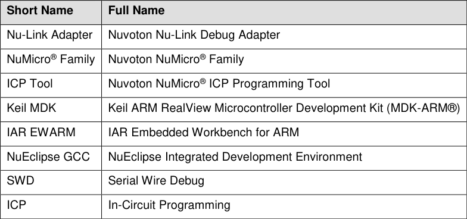
2 Hardware Specifications
Nu-Link 어댑터는 대상 칩에 연결하기 위한 USB 커넥터와 SWD 신호 인터페이스를 제공합니다. 사용자는 Nu-Link 어댑터를 PC의 USB 포트에 연결하여 개발 소프트웨어 도구를 통해 대상 칩을 디버깅하고 프로그래밍할 수 있습니다. 표 2-1과 같이 Nu-Link 어댑터에는 3가지 사양이 있으며, 사양에 따라 디버깅, 온라인/오프라인 프로그래밍, SWD I/O 전압 설정이 지원될 수 있습니다. (자세한 내용은 +부록 참조)
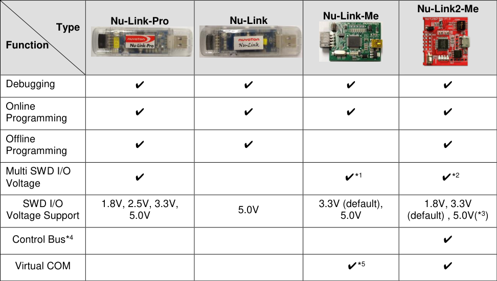
*1 저항 JPR1로 조정됩니다.
*2 저항 ICEJPR1로 조정됩니다.
*3 입력은 1.8V~5V를 지원하고, 출력은 1.8V~3.3V만 지원합니다.
*4 Nu-Link2-Me는 제어 버스를 통해 자동 IC 프로그래밍 시스템에 연결할 수 있습니다.
IC 프로그래머를 위한 제어 버스(Start, Busy, Pass, Fail) .
*5 Virtual COM은 V3.0 이후 버전에서 지원됩니다.
2.1 Nu-Link-Pro
Nu-Link-Pro는 디버깅, 온라인/오프라인 프로그래밍, SWD I/O 전압 설정 기능을 갖춘 완전한 기능의 디버거이자 프로그래머입니다. 그림 2-1에 표시된 것처럼 Nu-Link-Pro에는 컴퓨터 호스트에 연결할 수 있는 USB 포트, 상태 LED 세트, 오프라인 프로그래밍 버튼, 디버깅 및 프로그래밍을 위해 대상 칩에 연결할 수 있는 SWD 포트(SWD 포트의 전압 레벨은 소프트웨어를 통해 1.8V, 2.5V, 3.3V 또는 5.0V로 조정 가능), SWD I/O 전압 LED 및 SWD 전원 출력 LED 세트가 포함되어 있습니다.
Offline Programming Button SWD Power Output LED SWD VCC NC ICE_DAT NC USB ICE_CLK NC /RESET NC VSS(GND) NC SWD I/O Voltage LED Status LED (1.8V / 2.5V / 3.3V / 5.0V) (ICE / ICP / Red / Green)
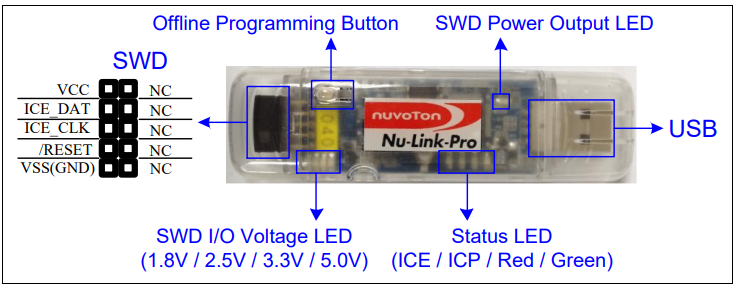
2.2 Nu-Link
Nu-Link는 디버깅 및 온라인/오프라인 프로그래밍 기능을 갖춘 기본 디버거이자 프로그래머입니다. 그림 2-2에서 볼 수 있듯이 Nu-Link에는 컴퓨터 호스트에 연결할 수 있는 USB 포트, 상태 LED 세트, 오프라인 프로그래밍 버튼, 디버깅 및 프로그래밍을 위해 대상 칩에 연결할 수 있는 SWD 포트가 포함되어 있습니다(SWD 포트의 기본 전압은 5.0V).
Offline Programming Button SWD USB Green Status LED Red ICP ICE
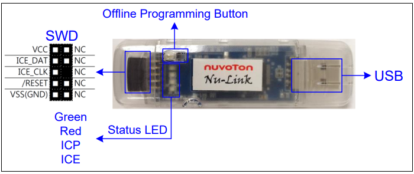
2.3 Nu-Link-Me
Nu-Link-Me는 디버깅 및 온라인 프로그래밍 기능을 갖춘 간단한 디버거이자 프로그래머로, NuTiny-SDK 키트와 함께 제공되며 NuMicro® 맞춤형 제품군 시스템을 개발하기 위해 독립형으로 사용할 수 있습니다. 그림 2-3에 표시된 것처럼 Nu-Link-Me에는 컴퓨터 호스트에 연결할 수 있는 USB 포트, 상태 LED 세트, Nu-Link-Me의 전압을 3.3V와 5.0V(기본값은 3.3V) 사이에서 전환하는 전원 스위치, 디버깅 및 프로그래밍을 위해 대상 칩에 연결할 수 있는 SWD 포트(전압은 NuLink-Me로 조정 가능)가 포함되어 있습니다.
Virtual COM Switch SWD VCC ICE_DAT ICE_CLK USB /RESET ICE_RX VSS(GND) ICE_TX Status LED (ICE / ICP / Red / Green)
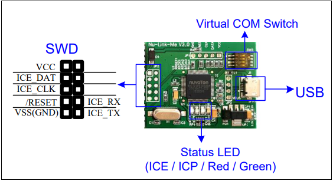
2.4 Nu-Link2-Me
Nu-Link2-Me는 디버깅 및 온라인 프로그래밍 기능을 갖춘 간단한 디버거 및 프로그래머로, Nu-Maker 키트에만 제공되며 SWD 인터페이스를 통해 온라인 프로그래밍 및 디버깅을 지원하는 맞춤형 제품군 시스템인 NuMicro® 개발을 위해 독립형으로 사용할 수 있습니다. 온보드 16Mbit SPI 플래시를 사용하면 대상 마이크로컨트롤러를 오프라인으로 프로그래밍할 수 있습니다. Nu-Link2-Me는 PC에서 메시지를 인쇄할 수 있는 가상 COM 포트(VCOM) 기능을 제공합니다. Nu-Link2-Me는 NuMaker와 분리되어 사용자가 대량 생산 프로그래밍 도구로 사용할 수 있습니다. 그림 2-4는 주요 구성요소와 커넥터를 전면에서 본 모습입니다.
VIrtual COM Switch SWD VCC BUSY ICE_DAT START USB ICE_CLK ICE_RX/Pass /RESET VSS(GND) ICE_TX/Fail ICE SW Status LED (ICE / ICP / Red / Green)
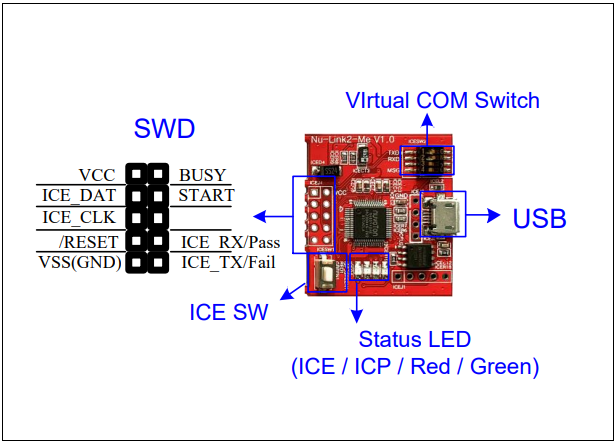
ICEVCC MCUVCC Power Switch Power Switch
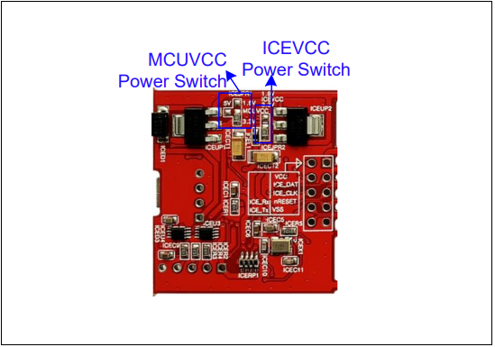
2.5 Nu-Link Adapter Hardware Specifications
Nu-Link 어댑터 하드웨어 비교는 표 2-2에 나와 있습니다.
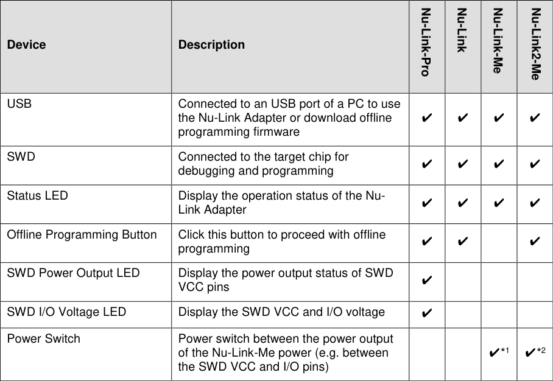
*일부 버전에서만 지원됩니다(5V 및 3.3V 지원은 저항 JPR1을 통해 조정 가능).
* Nu-Link2-Me.
- MCUVCC Power Switch (ICEJPR1)
- ICEVCC Power Switch (ICEJPR2)
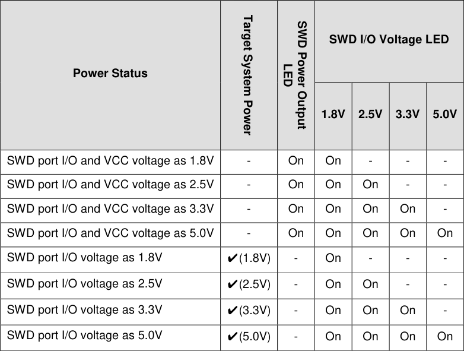
3 Main Functions
NuMicro® Nu-Link 어댑터는 제품군을 위한 완벽한 디버깅 및 프로그래밍 기능을 제공하고 다양한 타사 개발 도구를 지원합니다. 자세한 기능 지원은 표 3-1에 나열되어 있습니다.
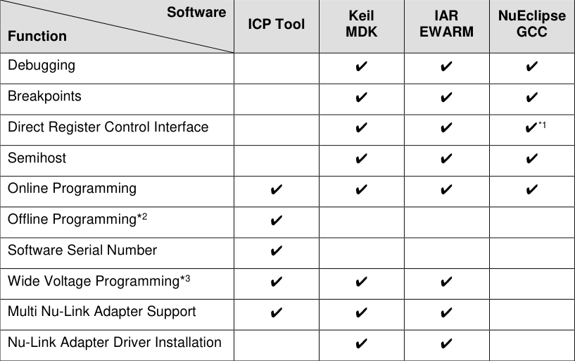
*1 코어 레지스터 보기가 지원됩니다. 주변기기 보기는 지원되지 않습니다.
*2 Nu-Link, Nu-Link-Pro 및 Nu-Link2-Me에 지원됩니다.
*3 Nu-Link-Pro에 지원됩니다.
3.1 Debugging
이 섹션에서는 Nu-Link Adapter가 지원하는 디버깅 기능에 대해 간략하게 설명합니다. 자세한 내용은 관련 사용자 매뉴얼을 참조하시기 바랍니다.
3.1.1 Debug Mode
NuMicro® Nu-Link 어댑터는 SWD 신호 인터페이스를 기반으로 하는 제품군 칩에 대한 디버깅을 지원합니다. 칩 디버깅을 위해 Nu-Link 어댑터 사용을 지원하는 타사 도구에는 Keil MDK, IAR EWARM 및 NuEclipse GCC가 포함됩니다. 디버그 모드에서 지원되는 추가 기능은 다음과 같습니다.
3.1.2 Breakpoints
디버그 모드에서 사용자는 디버깅을 위해 코드에 중단점을 추가할 수 있습니다. Nu-Link 어댑터의 실시간 시뮬레이션 중에 칩 시뮬레이션은 특정 중단점에서 중지됩니다. 그림 3-1은 Keil MDK 디버그 모드의 중단점 설정을 보여줍니다. 052행과 059행의 빨간색 레이블은 삽입된 중단점을 나타냅니다. 노란색 화살표는 다음에 실행될 코드를 나타내며 프로그램 카운터(PC)의 레지스터 값을 표시합니다(예: 그림 3-1의 "R15(PC)=0x00000D04" 레지스터 창).
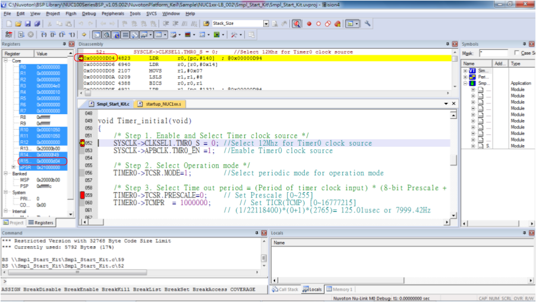
3.1.3 Direct Register Control Interface
직접 레지스터 제어 인터페이스는 대상 칩에 레지스터 내용을 표시하고 레지스터를 조작하는 데 사용할 수 있습니다. 예를 들어 Keil MDK 디버그 모드를 선택하면 디버그 명령을 호출하고(예: ADC, CAN, CLK 등) 직접 레지스터를 열고 그림 3-2와 같이 선택한 레지스터의 "기능 레지스터 목록" 제어 인터페이스에서 레지스터를 선택합니다.
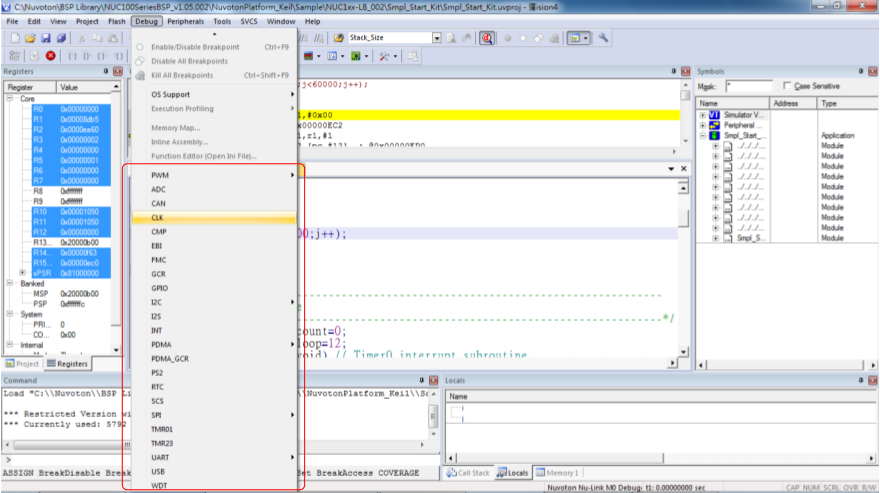
CLK용 직접 레지스터 제어 인터페이스는 그림 3-3의 왼쪽 부분에 표시됩니다. 여기서 왼쪽 열은 레지스터 주소를 표시하고, 중간 열은 레지스터 이름을 표시하고, 오른쪽 열은 레지스터 값을 표시합니다. PWRCON용 직접 레지스터 제어 인터페이스는 그림 3-3의 오른쪽 부분에 표시되어 있으며, 왼쪽 열에는 기능 비트가 표시되고 중간 열에는 기능 이름이 표시되며 오른쪽 열에는 기능 값이 표시됩니다.
Detailed Operation:
"레지스터 값"을 두 번 클릭하면 그림 3-3의 오른쪽 부분에 표시된 것처럼 레지스터 제어 세부 정보가 열립니다.
"레지스터 이름" 또는 "컨트롤 값" 위로 커서를 이동하면 팁이 표시됩니다. "레지스터 값" 또는 "제어 값"은 직접 수정할 수 있습니다. 그러면 Nu-Link 어댑터가 대상 칩의 내용을 수정합니다.
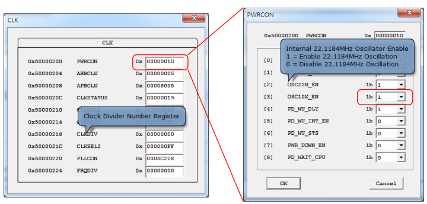
3.1.4 Semihost
NuMicro® Semihost 기능을 사용할 때 제품군 마이크로 컨트롤러의 메시지는 Nu-Link 어댑터를 통해 UART를 통해 디버그 창으로 출력될 수 있습니다. 즉, GPIO 없이 메시지가 출력됩니다. 그림 3-4는 Nu-Link Adapter에서 출력되는 메시지인 “UART #1” 형식의 디버그 메시지를 보여줍니다.
Semihost를 사용하려면 아래 단계를 따르십시오(Keil MDK 및 M031AE 시리즈를 예로 사용).
1단계: "startup_NUC1xx.s" 문자열을 다음과 같이 수정합니다.
;SEMIHOSTED SETL {FALSE} ; 이 줄 삭제
;↓수정
SEMIHOSTED SETL {TRUE} ; 이 줄을 추가하세요
2단계: "system_NUC1xx.h" 문자열을 다음과 같이 수정합니다.
//#define DEBUG_ENABLE_SEMIHOST // 이 줄을 삭제합니다.
//↓수정
#define DEBUG_ENABLE_SEMIHOST // 이 줄을 추가하세요
3단계: Rebuild를 호출하여 프로젝트를 다시 빌드하고 디버그 모드로 들어갑니다.
4단계: 디버그 모드에서 그림 3-4와 같이 View → Serial Windows → UART #1을 호출합니다.
5단계: F5를 눌러 대상 칩을 프로그래밍하면 디버그 메시지가 UART #1 형식으로 출력됩니다.
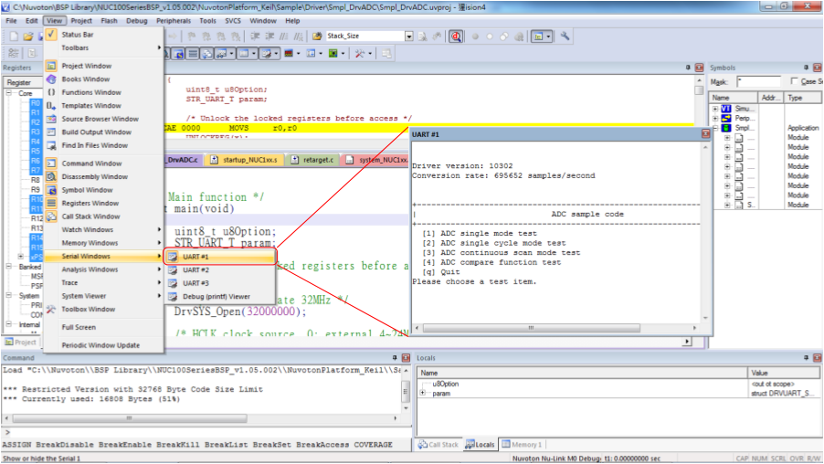
3.2 Programming
이 섹션에서는 Nu-Link 어댑터가 지원하는 프로그래밍 기능을 간략하게 설명합니다. 자세한 내용은 관련 사용자 매뉴얼을 참조하시기 바랍니다.
3.2.1 Online Programming
온라인 프로그래밍은 그림 3-5와 같이 Nu-Link 어댑터가 소프트웨어 프로그램을 통해 제품군 단일 칩의 펌웨어를 대상 칩에 다운로드할 수 있음을 의미합니다.
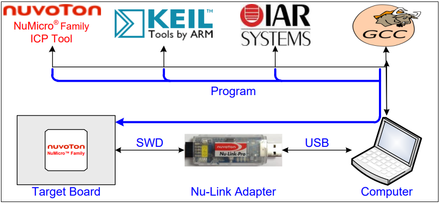
3.2.2 Offline Programming
NuMicro® 오프라인 프로그래밍은 Nu-Link 어댑터가 소프트웨어 프로그램에 액세스하지 않고도 제품군 단일 칩의 펌웨어를 직접 업데이트할 수 있음을 의미합니다(그림 3-6 참조). 오프라인 프로그래밍은 대량 생산에 유용합니다. 대량 생산에는 원본 코드나 펌웨어 파일을 전달할 필요가 없고 Nu-Link 어댑터만 있으면 되기 때문입니다. 또한 Nu-Link 어댑터는 승인된 펌웨어 수를 효과적으로 제어할 수 있는 "제한된 오프라인 프로그래밍"을 지원합니다. 자세한 내용은 ICP 도구 사용자 매뉴얼을 참조하세요.
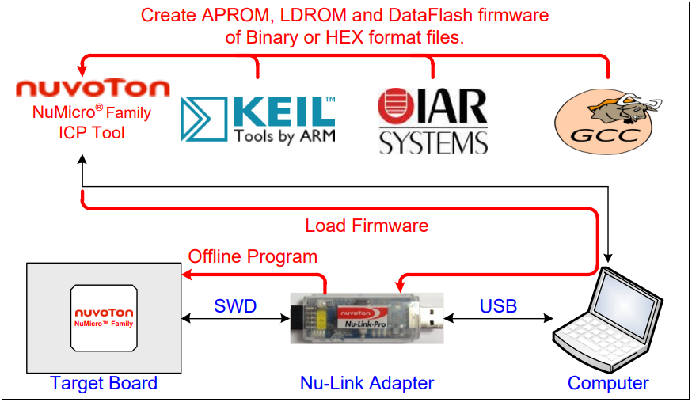
3.2.3 Software Serial Number (SN)
ICP 도구에서 제공하는 소프트웨어 일련 번호(SN) 기능을 사용하면 사용자는 온라인/오프라인 프로그래밍 중에 대상 칩에 대한 "Increase SN from" "Write address in flash" 필드에 값을 지정할 수 있습니다. 예를 들어 NUC140VE3CN 칩을 사용하면 사용자는 APROM, LDROM 및 데이터 플래시에 "증가된 일련 번호(SN)" 및 "쓰기 주소" 세트를 지정할 수 있으며 기록된 일련 번호(SN)는 자동으로 증가됩니다(그림 3-7 참조).
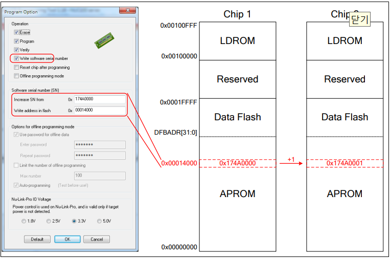
3.3 Wide Voltage Programming
Nu-Link-Pro는 개발 소프트웨어 도구가 SWD 포트 전압을 1.8V, 2.5V, 3.3V 또는 5.0V로 조정할 수 있는 광범위한 전압 프로그래밍 기능을 지원합니다. 그림 4-2에서 볼 수 있듯이 제어할 수 있는 핀에는 VCC, ICE_DAT, ICE_CLK, /RESET이 있습니다.
또한, 그림 2-1과 같이 Nu-Link-Pro는 SWD 포트 전압을 확인하기 위한 SWD I/O 전압 LED와 SWD 전원 출력 LED 세트를 제공합니다. LED 상태에 대한 자세한 내용은 표 2-3을 참조하십시오. Nu-Link-Me는 저항기 JPR1이 SWD 포트 전압을 3.3V 또는 5.0V로 조정할 수 있는 넓은 전압 프로그래밍 기능을 지원합니다. 그림 4-2에서 볼 수 있듯이 제어할 수 있는 핀에는 VCC, ICE_DAT, ICE_CLK, /RESET, ICE_RX 및 ICE_TX가 있습니다.
Nu-Link2-Me는 저항기 ICEJPR1이 SWD 포트 전압을 1.8V, 3.3V 또는 5.0V로 조정할 수 있는 광범위한 전압 프로그래밍 기능을 지원합니다. 그림 4-2에서 볼 수 있듯이 제어할 수 있는 핀에는 VCC, ICE_DAT, ICE_CLK, /RESET, ICE_RX/PASS, ICE_TX/Fail, BUSY 및 START가 있습니다.
3.4 Nu-Link 어댑터 드라이버 설치
Nu-Link 어댑터는 다양한 기능과 타사 소프트웨어 도구(예: Keil MDK 및 IAR EWARM)를 지원합니다. 소프트웨어 프로그램을 설치한 후에는 드라이버도 필요합니다. Keil MDK용 Nu-Link 어댑터 드라이버 및 IAR EWARM용 Nu-Link 어댑터 드라이버 링크를 사용하여 최신 버전을 설치할 수 있습니다. 소프트웨어 설정에 대한 자세한 내용은 섹션 4.2를 참조하십시오.
4 설치 및 설정
이 장에서는 Nu-Link 어댑터를 컴퓨터에 연결하는 방법과 Nu-Link 어댑터를 디버거 및 프로그래머로 사용하도록 타사 도구를 설정하는 방법을 소개합니다.
4.1 Nu-Link 어댑터에 연결하기
그림 4-1에서 볼 수 있듯이 Nu-Link 어댑터는 소프트웨어 도구가 USB를 통해 대상 칩을 디버깅하고 프로그래밍할 수 있는 USB와 SWD 인터페이스 사이의 브리지입니다. 사용자는 Nu-Link 어댑터를 PC의 USB 포트에 직접 연결하거나 USB 커넥터를 사용하여 연결할 수 있습니다.
Nu-Link 어댑터는 SWD 포트를 통해 대상 회로 기판에 전원(1.8V, 2.5V, 3.3V 또는 5.0V)을 공급할 수 있습니다. 최대값은 5V/500mA입니다. 자세한 사양은 표 2-1을 참조하세요.
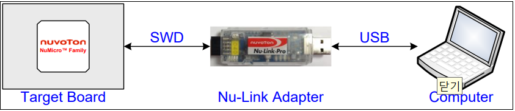
SWD Connector:
모든 개발 도구 및 평가 보드에 적용할 수 있는 SWD 커넥터는 그림 4-2의 왼쪽과 같이 100mil(2×5) 암 헤더입니다.
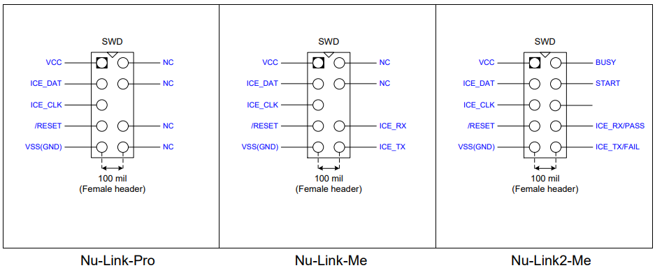
4.2 Software Setup
이 섹션에서는 Nu-Link 어댑터에 연결하는 데 필요한 소프트웨어 설정에 대해 간략하게 설명합니다. 자세한 소프트웨어 작동 방법은 관련 사용 설명서를 참조하세요.
4.2.1 ICP 도구
1단계: Nuvoton ICP 프로그래밍 도구를 다운로드하고 설치합니다.
2단계: 그림 4-3과 같이 ICP 도구를 열고 UI 언어와 대상 칩을 지정한 다음 계속을 클릭합니다.
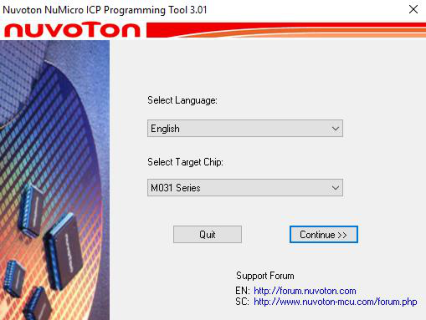
3단계: 그림 4-4와 같이 ICP 도구가 Nu-Link 어댑터와 연결되지 않았기 때문에 ICP 도구 창에서 연결 상태가 "연결 끊김"으로 표시됩니다.
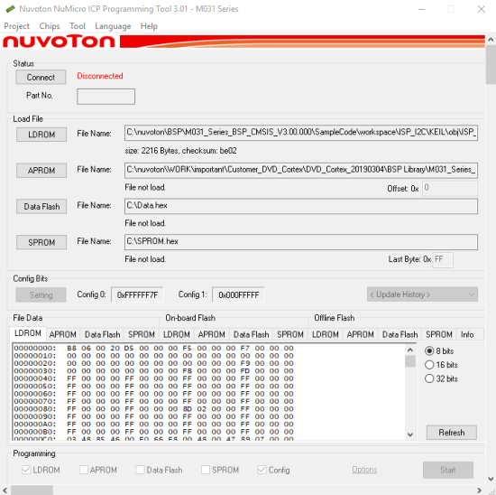
4.2 Software Setup
4단계: 그림 4-5와 같이 ICP 도구 창의 프로그램 섹션에서 옵션을 클릭하여 프로그램 옵션 양식을 엽니다.
5단계: Nu-Link Pro IO 전압 섹션에서 대상 칩에 대한 SWD 포트의 전원 전압을 지정한 다음 확인을 클릭합니다. 오프라인 프로그래밍 기능을 사용하려면 그림 4-5와 같이 오프라인 프로그래밍 모드 옵션을 선택해야 합니다.
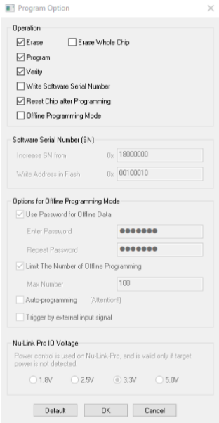
6단계: ICP 도구 창으로 돌아가서 연결 버튼을 클릭합니다. 2개 이상의 Nu-Link 어댑터가 호스트에 연결된 경우 5단계로 이동하세요. Nu-Link 어댑터가 하나만 호스트에 연결된 경우 6단계로 이동하세요.
7단계: 두 개의 Nu-Link 어댑터가 컴퓨터에 연결된 경우 두 어댑터 중 하나를 선택하라는 메시지가 나타납니다. 확인을 클릭하면 그림 4-6과 같이 선택한 어댑터가 호스트에 연결됩니다. 연결을 위해 Nu-Link 어댑터를 선택하면 상태 LED가 깜박이기 시작합니다. 깜박이는 자세한 내용은 표 2-4의 “호스트와 연결할 어댑터 선택”의 상태 LED 설명을 참조하세요.
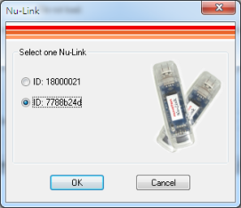
4.2 Software Setup
8a단계: 연결 버튼을 클릭하면 ICP 도구가 Nu-Link 어댑터와 연결되고 SWD 포트가 감지됩니다. 그림 4-7은 ICP 도구가 Nu-Link 어댑터와 연결되어 대상 칩이 감지되는 것을 보여줍니다. 이때 사용자는 대상 칩 프로그래밍을 시작할 수 있습니다.
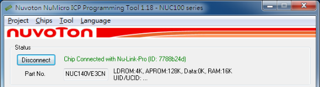
8b단계: 그림 4-8은 ICP 도구가 대상 칩이 감지되지 않은 상태에서 Nu-Link 어댑터와 연결되었음을 보여줍니다. ICP 도구는 확인 중지 버튼을 클릭할 때까지 대상 칩을 계속 감지합니다. 현재 사용자는 어떤 칩도 프로그래밍할 수 없지만 오프라인 프로그래밍을 사용하여 Nu-Link 어댑터에 오프라인 프로그래밍 정보를 저장할 수 있습니다.
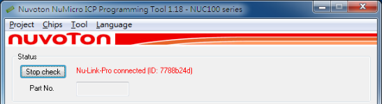
9단계: 프로그래밍이 필요하지 않으면 연결 끊기 버튼을 클릭합니다(그림 4-7 참조). 또는 검사 중지 버튼을 클릭하여 Nu-Link 어댑터와 ICP 도구의 연결을 끊고 Nu-Link 어댑터를 사용하지 않은 상태로 둡니다(그림 4-8 참조). 따라서 Nu-Link 어댑터는 다른 도구와 연결할 수 있습니다.
4.2.2 Keil MDK
1단계: Keil MDK를 설치합니다. Nu-Link 어댑터를 설정하기 전에 Keil MDK용 Nu-Link 어댑터 드라이버가 다운로드되어 Keil MDK가 Nu-Link 어댑터를 인식할 수 있도록 설치되었는지 확인하십시오.
2단계: Keil MDK를 열고 설정할 프로젝트를 엽니다.
Debugger Settings:
3단계: 그림 4-9와 같이 프로젝트 → 대상 옵션 → 출력을 호출하고 디버그 정보 옵션을 활성화합니다.
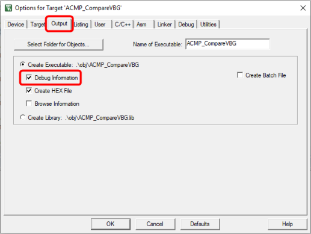
4단계: 대상 디버그를 위한 프로젝트 옵션을 호출하고 그림 4-10과 같이 Use:「Nuvoton Nu→ → Link M0 Debugger 옵션이 선택되어 있는지 확인합니다.
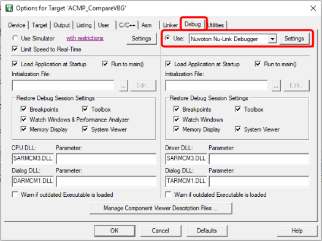
단계: 5: 그림 4-11과 같이 설정 버튼을 클릭하여 디버그 양식을 엽니다. 각 설정 설명은 표 4-1을 참조하십시오. 디버그 양식에 표시되는 설정 옵션은 사용되는 Nu-Link 어댑터 유형에 따라 달라질 수 있습니다.
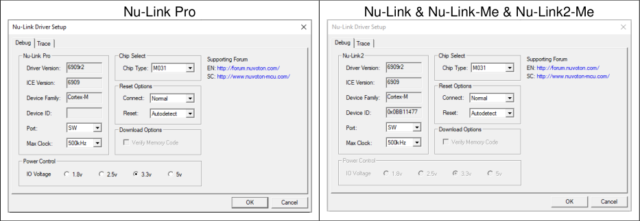
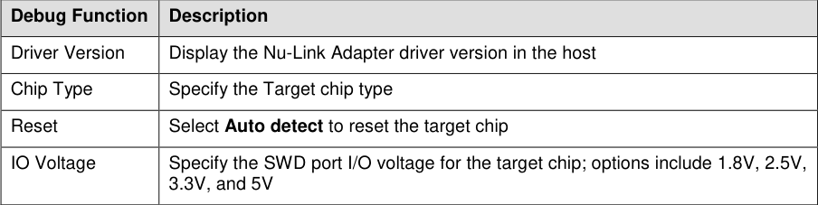
Programmer Settings:
6단계: 그림 4-12와 같이 프로젝트 호출 → 대상 옵션 → 유틸리티를 선택하고 플래시 프로그래밍용 대상 드라이버 사용 옵션이 활성화된 경우 "Nuvoton Nu-Link M0 디버거"를 선택한 다음 디버깅 전 대상 업데이트 옵션을 선택합니다.
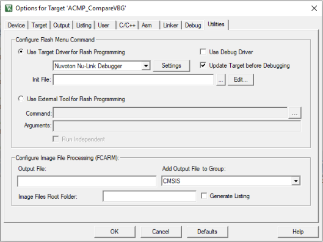
7단계: 그림 4-13에 표시된 것처럼 설정 버튼을 클릭하여 플래시 다운로드 양식을 엽니다. 여기서 사용자는 Nu-Link 어댑터로 프로그래밍하기 전이나 후에 옵션을 지정할 수 있습니다.
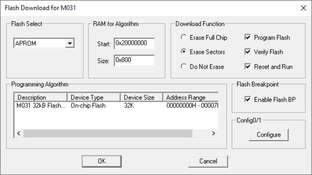
4.2.3 IAR EWARM
1단계: IAR EWARM을 설치합니다. IAR EWARM이 Nu-Link 어댑터를 인식할 수 있도록 Nu-Link 어댑터를 설정하기 전에 IAR EWARM용 Nu-Link 어댑터 드라이버가 다운로드되어 설치되었는지 확인하십시오.
2단계: IAR EWARM을 열고, 설정할 프로젝트를 엽니다.
3단계: 그림 4-14 및 그림 4-15와 같이 일반 옵션 페이지의 대상 탭에서(프로젝트 → 옵션 호출을 통해) 장치 옵션 오른쪽에 있는 버튼을 클릭하고(장치 옵션이 활성화되어 있는지 확인) 대상 칩으로 “Nuvoton → Nuvoton M031AE 시리즈”를 선택합니다(이 경우 M031AE 시리즈).
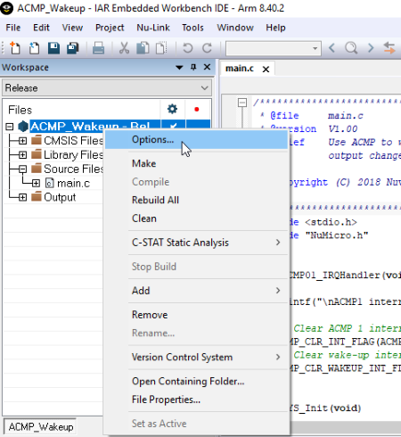
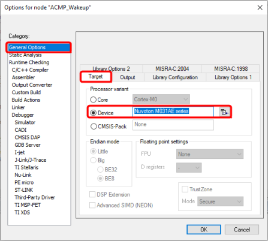
디버거 및 프로그래머 설정:
4단계: 그림 4-16에 표시된 대로 디버거 페이지의 설정 탭에서 타사 드라이버를 드라이버로 선택합니다.
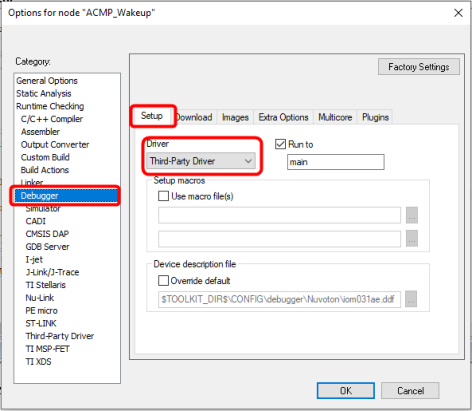
단계: 5: 그림 4-17에 표시된 대로 디버거 페이지의 다운로드 탭에서 플래시 로더 사용 옵션이 선택되어 있는지 확인합니다.
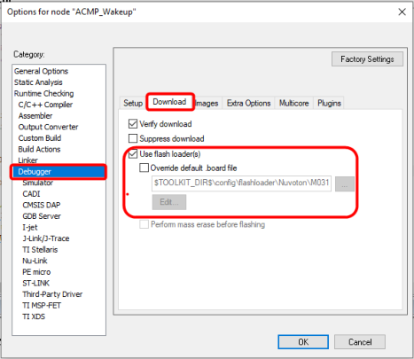
단계: 6: 펌웨어를 APROM 또는 LDROM에 다운로드하려면 디버거 페이지의 다운로드 탭에서 기본 .board 파일 재정의 옵션을 선택한 다음 NUC100_APROM.board 또는 NUC100_LDROM.board 파일을 지정합니다(이 경우 NUC100 시리즈가 사용됨). 파일이 발견되지 않으면 그림 4-18과 같이 "$TOOLKIT_DIR$\config\flashloader\Nuvoton\" 경로를 지정합니다.
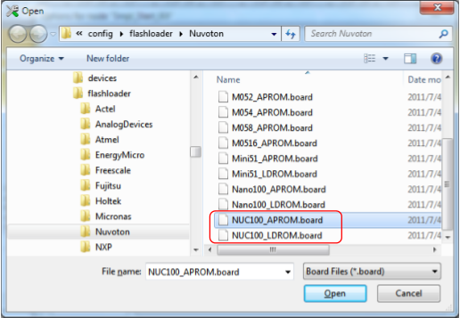
드라이버 플러그인 파일 설정:
7단계: 그림 4-19와 같이 타사 드라이버 페이지에서 IAR 디버거 드라이버 플러그인 "C:\Program Files\Nuvoton Tools\Nu-Link_IAR\Nu-Link_IAR.dll"의 경로를 지정합니다.
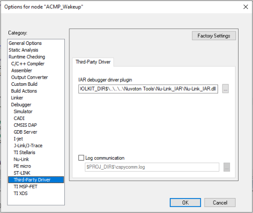
8단계: 확인을 클릭하여 설정을 저장하고 IAR EWARM 기본 창으로 돌아갑니다.
9단계: Nu-Link를 호출하여 Nu-Link 양식을 열고 SWD를 포트로 선택한 다음 그림 4-20과 같이 대상 전원 제어 섹션(이 경우 3.3V)에서 Nu-LinkPro I/O 전압을 지정합니다.
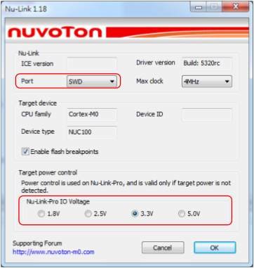
4.2.4 NuEclipse GCC
1단계: 드라이버 설치가 필요 없는 NuEclipse GCC를 설치합니다.
2단계: NuEclipse GCC를 열고 설정할 프로젝트를 엽니다.
UM_NuEclipse_EN도 참고해주세요.
Debugger Settings:
3단계: 디버그 모드에서는 디버그 모드에 대한 모든 필수 정보가 포함된 디버그 구성을 준비해야 합니다. 실행 > 디버그 구성…을 클릭하여 디버그 구성 대화 상자를 엽니다. GDB Nuvoton NuLink 디버깅 그룹을 두 번 클릭합니다. Nuvoton Nu-Link 디버그 구성이 오른쪽에 나타납니다. Main 탭에서 Project 이름은 프로젝트 이름과 일치해야 합니다. C/C++ 애플리케이션은 빌드 프로세스에서 생성된 .elf 애플리케이션을 가리켜야 합니다. 그림 4-21과 같습니다. 프로젝트 이름이나 C/C++ 애플리케이션이 잘못된 경우 프로젝트 보기에서 먼저 예상되는 프로젝트를 선택하고 프로젝트를 빌드하여 실행 파일을 생성한 후 트리를 확장하여 생성된 실행 파일이 있는지 확인하세요. 그런 다음 이전 작업을 다시 반복하십시오.
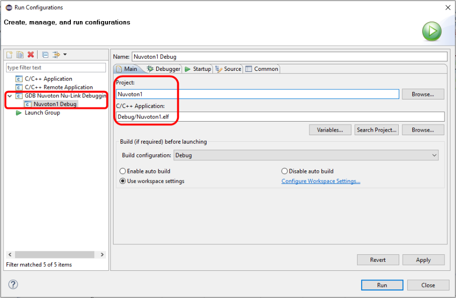
Programmer Settings:
4단계: 디버거 탭은 OpenOCD 및 GDB 클라이언트 설정을 제공하는 데 사용됩니다. OpenOCD는 어댑터 및 대상 칩 작업 방법을 알기 위해 올바른 구성 파일이 필요합니다. 구성 파일은 구성 옵션 필드에 지정됩니다. Nuvoton의 어댑터는 Nu-Link입니다.
4.2.4 GCC
nulink.cfg라는 인터페이스 구성 파일을 사용합니다. 또한 Nuvoton에는 M0, M4 및 M23과 같은 세 가지 ARM 제품군이 있습니다. 해당 대상 구성 파일은 numicroM0.cfg, numicroM4.cfg 및 numicroM23.cfg입니다. M0 2차 개발의 경우 대상 구성 파일은 그림 4-22와 같이 numicroM0_NS.cfg가 됩니다.
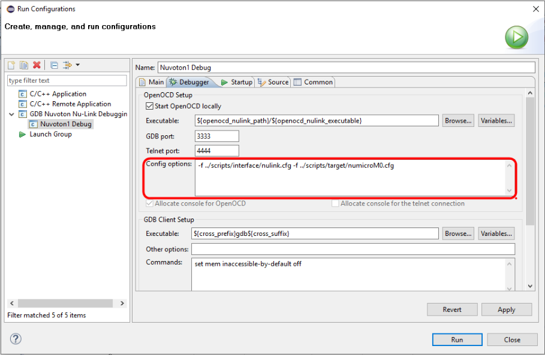
5단계: 첫 번째 단계로 시작 탭에서 올바른 칩 시리즈를 선택해야 합니다. 완료되면 해당 대상 구성 파일이 디버거 탭의 구성 옵션 필드에 자동으로 기록됩니다. 실행 파일을 플래시로 로드하려면 로드 실행 파일을 플래시 확인란을 선택해야 합니다. 실행 파일을 RAM에 로드하려면 SRAM에 실행 파일 로드 확인란을 선택해야 합니다. 모든 설정이 완료되면 적용 버튼을 클릭하여 적용합니다. 애플리케이션을 디버그 모드로 시작하려면 디버그 버튼을 클릭하세요.
6단계: 마지막으로 그림 4-23과 같이 적용을 클릭하여 설정을 저장합니다.
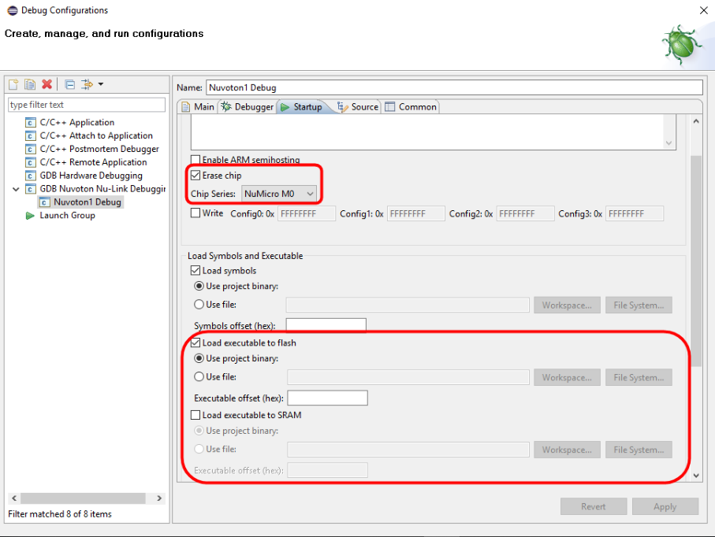
5.1 Nu-Link Adapter Operating Current
온라인 프로그래밍 중 USB를 통해 전원을 공급할 때 Nu-Link 어댑터의 작동 전류는 아래 표와 같습니다.
오프라인 프로그래밍 중 타겟 보드(SWD VCC 핀)에서 전원을 공급할 때 Nu-Link Adapter의 작동 전류는 아래 표와 같습니다.
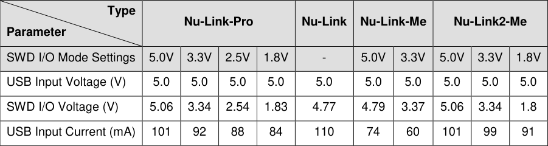
5.2 Automatic IC Programming System
그림 5-1과 같이 개별 슬롯과 제어 버스를 통한 자동 IC 프로그래밍 시스템.
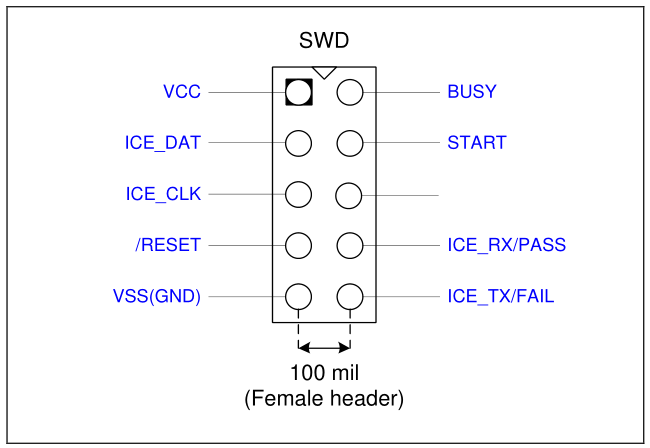
Operation sequence
5.2.1 및 파형
1. Nu-Link2-ME의 전원을 켭니다. START, BUSY, PASS, FAIL이 로직으로 설정됩니다.
2. 프로그래밍을 시작하려면 START를 TSTART에 대해 논리 0으로 설정해야 합니다.
3. 프로그래밍 시작. BUSY는 로직 0으로 설정되며 프로그래밍 중에 토글될 수 있습니다.
4. 프로그래밍이 끝나면 BUSY는 로직 1로 설정되고 PASS 또는 FAIL은 로직 0으로 설정됩니다.
- BUSY가 로직 1로 설정되고, PASS가 로직 0으로 설정되면 “PASS”를 의미합니다.
- BUSY가 로직 1로 설정되고, FAIL이 로직 0으로 설정되면 “FAIL”을 의미합니다.
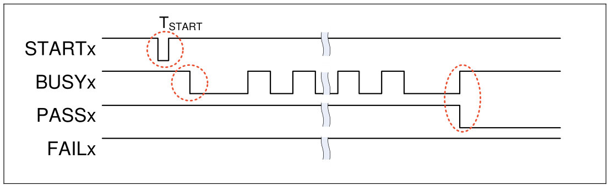
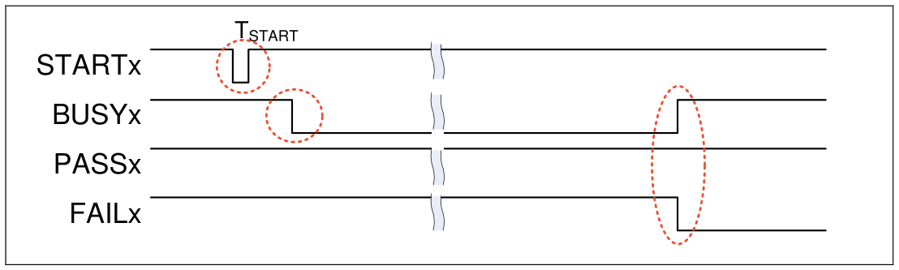